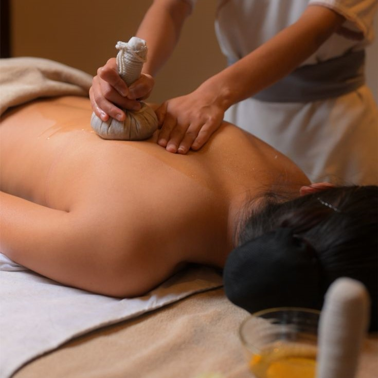
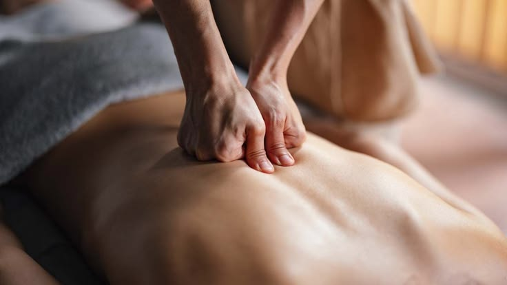
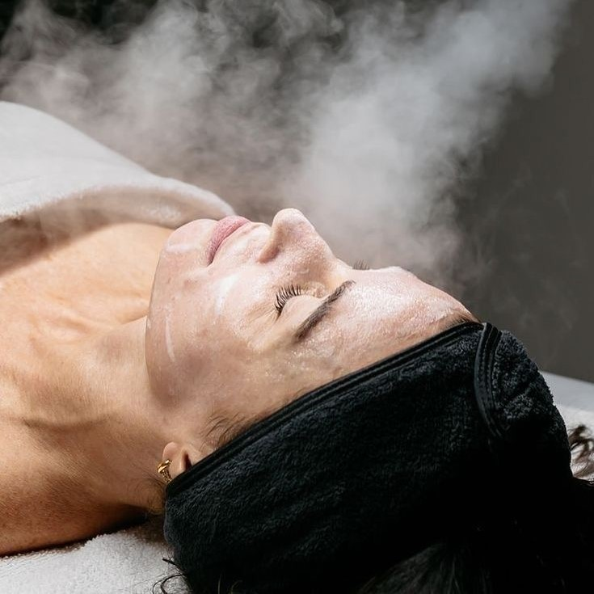
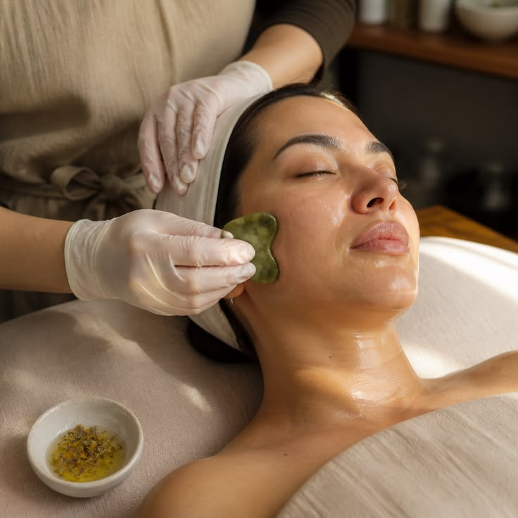
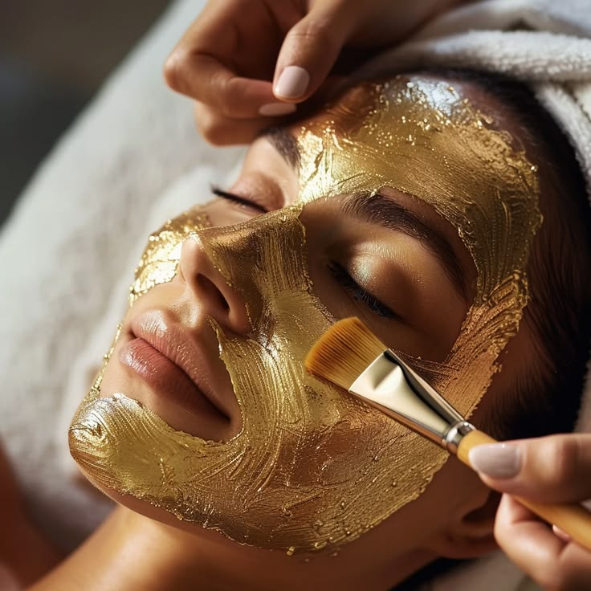
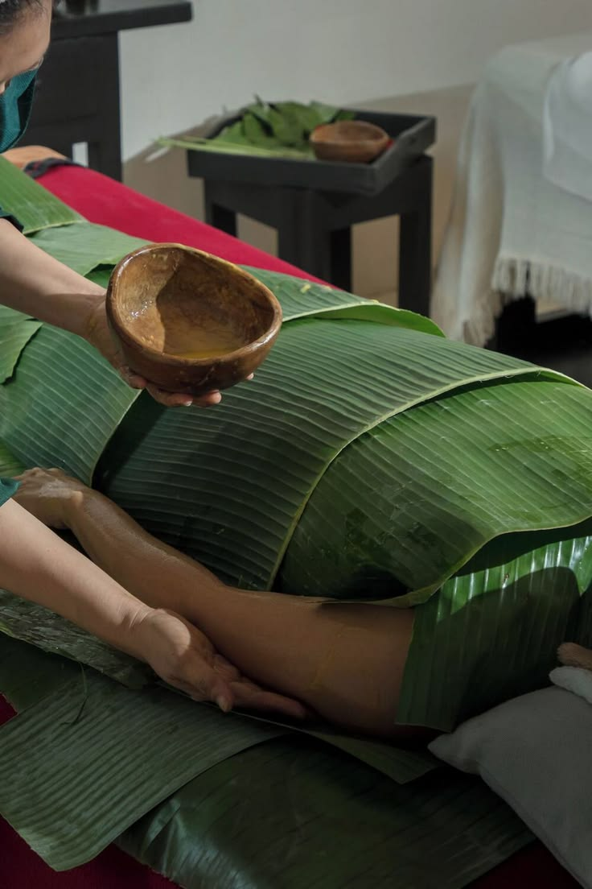
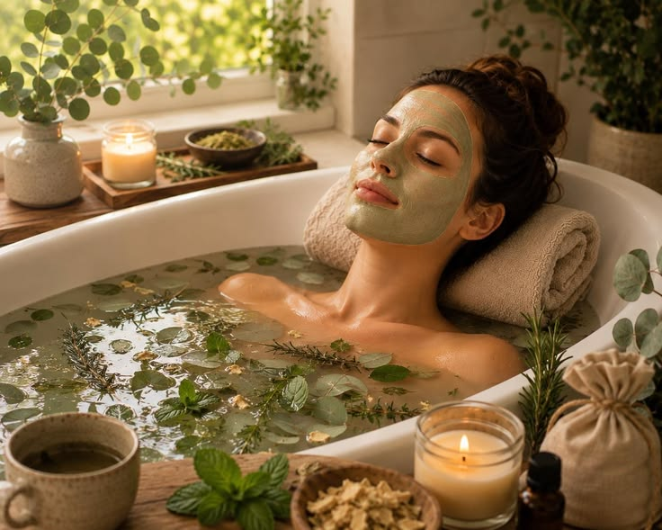
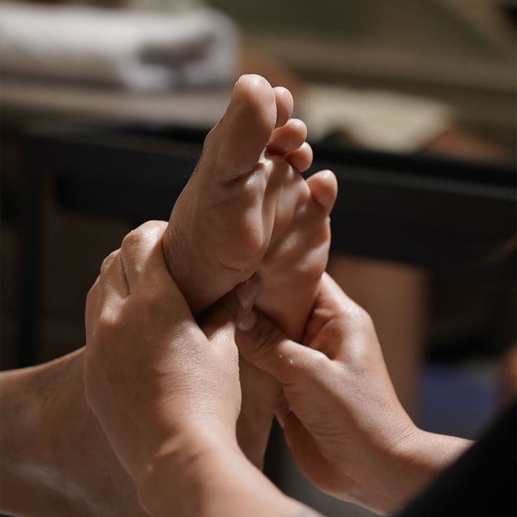
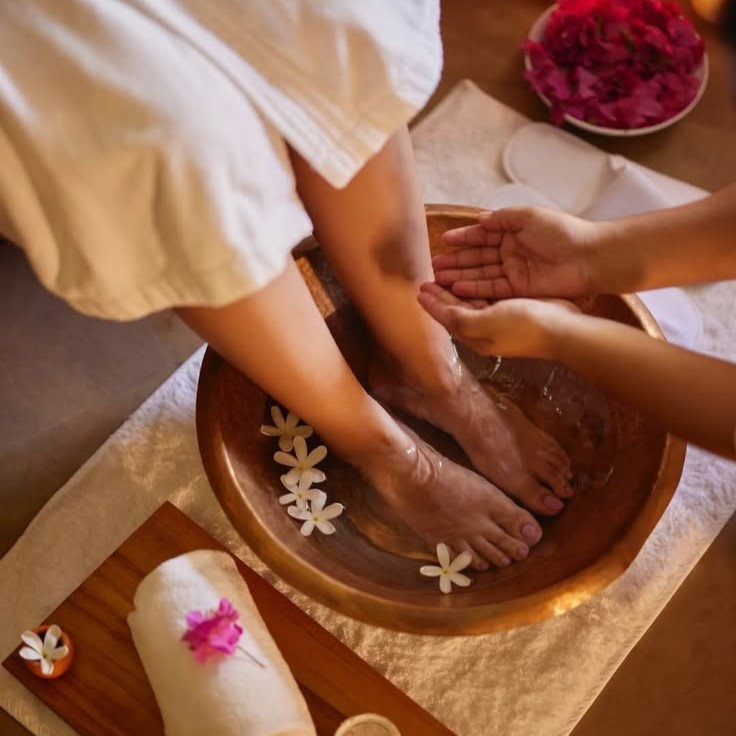
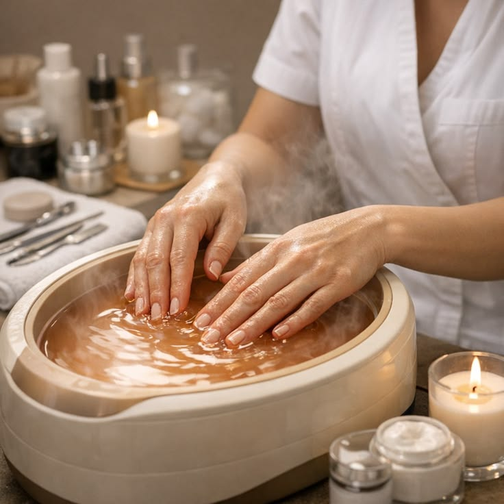

Massage Therapy
RELAX • RESTORE • REJUVENATE

Aromatherapy Massage
A soothing full-body massage infused with aromatic essential oils to calm your senses and restore inner balance.
60 Minutes
₹2,499
Experience deep relaxation with our signature aromatherapy massage, combining gentle massage techniques with carefully selected essential oils. The calming aromas and rhythmic movements help create a peaceful escape from everyday stress.
Benefits:
- Promotes relaxation and mental calmness.
- Helps ease everyday muscle tension.
- Creates a soothing sensory experience.
- Leaves you feeling refreshed and balanced.
Experience: Gentle strokes, aromatic oils and a peaceful spa atmosphere.

Swedish Relaxation Massage
A classic full-body massage designed to release everyday tension and promote complete relaxation.
60 Minutes
₹2,199
Unwind with traditional Swedish massage techniques featuring long, flowing strokes, gentle kneading and rhythmic movements. This treatment is ideal for those looking to relax their muscles and enjoy a calming spa experience.
Benefits:
- Helps relieve everyday muscle tension.
- Encourages relaxation.
- Supports a feeling of improved circulation.
- Promotes overall physical comfort.
Experience: Gentle-to-moderate pressure with smooth, flowing massage movements.

Deep Tissue Massage
A targeted massage using firm pressure to address deeper muscle tension and stiffness.
60 Minutes
₹2,799
Designed for those who experience muscle tightness or physical fatigue, this massage uses slow, focused movements and deeper pressure on selected muscle groups. It helps release areas of tension and encourages greater muscle comfort.
Benefits:
- Targets deeper muscle tension.
- Helps ease muscle stiffness.
- Supports post-activity muscle recovery.
- Encourages improved physical comfort.
Experience: Firm, focused pressure tailored to your comfort level.

Hot Stone Massage
A deeply relaxing massage combining smooth, heated stones with gentle therapeutic massage techniques.
75 Minutes
₹3,199
Discover a calming spa ritual using warm, smooth stones placed on selected areas of the body and incorporated into massage movements. The gentle warmth creates a comforting sensation while helping relax tense muscles.
Benefits:
- Helps soothe muscle tension.
- Promotes deep relaxation.
- Creates a comforting warmth sensation.
- Encourages a peaceful mind and body experience.
Experience: Warm basalt stones, gentle massage movements and soothing surroundings.
Facial Treatments
NOURISH • HYDRATE • GLOW

Signature Glow Facial
A refreshing facial designed to cleanse, nourish and enhance your skin's natural radiance.
60 Minutes
₹1,799
Give your skin a revitalizing experience with our signature glow facial. This treatment combines gentle cleansing, exfoliation, a nourishing mask and moisturizing care to leave your skin feeling refreshed and looking radiant.
Benefits:
- Helps remove surface impurities.
- Gently exfoliates dead skin cells.
- Improves the appearance of dull skin.
- Leaves skin feeling soft and refreshed.
Experience: Cleansing, gentle exfoliation, facial massage, nourishing mask and hydration.

Hydration Facial
moisture-rich facial that replenishes hydration and leaves your skin feeling soft, smooth and refreshed.
45 Minutes
₹1,499
Treat your skin to a refreshing hydration experience with moisture-focused skincare products. This facial is designed to support your skin's moisture balance and improve the appearance of dryness and dehydration.
Benefits:
- Helps replenish skin moisture.
- Softens dry-feeling skin.
- Improves the appearance of skin texture.
- Leaves skin feeling supple and refreshed.
Experience: Gentle cleansing, hydrating serum, moisturizing mask and nourishing cream.

Gentle Refresh Facial
A gentle skincare treatment that cleanses, refreshes and revitalizes your skin.
45 Minutes
₹1,299
Perfect for a simple skincare refresh, this treatment focuses on gentle cleansing and hydration. Carefully selected products help remove everyday surface impurities while leaving your skin feeling clean, comfortable and refreshed.
Benefits:
- Gently cleanses the skin.
- Helps remove surface impurities.
- Refreshes tired-looking skin.
- Maintains a comfortable, hydrated feel.
Experience: Gentle cleansing, light exfoliation, soothing mask and moisturizer.

Luxury Gold Facial
An indulgent facial experience combining luxurious gold-inspired skincare with nourishing and hydrating care.
75 Minutes
₹2,499
Experience an elevated skincare ritual with our luxury gold facial. This premium treatment combines a relaxing facial massage, gold-inspired skincare products and a nourishing face mask to leave your skin looking refreshed and radiant.
Benefits:
- Provides an indulgent skincare experience.
- Helps improve the appearance of dull skin.
- Supports skin hydration.
- Leaves skin feeling smooth and refreshed.
Experience: Deep cleansing, gentle exfoliation, relaxing facial massage, gold mask and moisturizing care.
Body Treatments
EXFOLIATE • DETOX-INSPIRED CARE • RECHARGE

Body Polish
A full-body exfoliation ritual that removes surface dead skin cells and leaves your skin feeling silky smooth.
60 Minutes
₹2,199
Renew your skin with our luxurious body polishing treatment. A gentle exfoliating scrub is applied to the body to remove surface dead skin cells, followed by nourishing hydration to leave your skin feeling soft, smooth and refreshed.
Benefits:
- Gently exfoliates dead skin cells.
- Improves the feel of skin texture.
- Leaves skin feeling smoother.
- Provides a refreshing body-care experience.
Experience: Full-body exfoliation, gentle removal of scrub and moisturizing body care.

Herbal Body Wrap
A relaxing botanical body treatment featuring herbal-inspired ingredients and nourishing body care.
60 Minutes
₹2,499
Immerse yourself in a calming herbal body ritual. A botanical body mask is applied to the skin and allowed to rest before being gently removed. The treatment finishes with moisturizing care to leave your skin feeling refreshed and nourished.
Benefits:
- Nourishes and softens the skin.
- Provides a calming spa experience.
- Helps improve the feel of dry skin.
- Leaves the body feeling refreshed.
Experience: Leaves the body feeling refreshed.

Relaxing Body Ritual
Leaves the body feeling refreshed.
90 Minutes
₹3,499
Escape into a world of relaxation with our extended body ritual. This indulgent treatment brings together gentle body exfoliation, relaxing massage movements and nourishing body care to create a complete head-to-toe spa experience.
Benefits:
- Helps release everyday body tension.
- Gently exfoliates the skin.
- Promotes relaxation and comfort.
- Leaves skin feeling soft and nourished.
Experience: Leaves skin feeling soft and nourished.
Foot & Hand Care
PAMPER • REFRESH • RESTORE

Foot Ritual
A refreshing foot-care treatment designed to relax tired feet and leave them feeling soft and refreshed.
30 Minutes
₹999
Give your feet the care they deserve with our relaxing foot ritual. Enjoy a soothing foot soak, gentle exfoliation and a refreshing foot massage that helps you unwind after a long day. Benefits:
Benefits:
- Helps soothe tired feet.
- Gently exfoliates rough skin.
- Softens and refreshes the feet.
- Provides a relaxing experience.
Experience: Warm foot soak, gentle scrub, foot massage and moisturizing finish.

Luxury Pedicure
A premium foot-care experience combining nail grooming, exfoliation and deep moisturizing care.
45 Minutes
₹1,299
Treat your feet to a luxurious grooming experience. This treatment includes a relaxing soak, nail shaping, cuticle care, gentle exfoliation and moisturizing massage to leave your feet looking neat and feeling beautifully refreshed.
Benefits:
- Maintains clean and well-groomed nails.
- Helps soften rough skin.
- Improves the appearance of feet.
- Provides a relaxing foot-care experience.
Experience: Foot soak, nail trimming and shaping, cuticle care, exfoliation, massage and polish.

Signature Manicure
A refreshing hand-care ritual that combines nail grooming, gentle exfoliation and moisturizing care.
45 Minutes
₹999
Give your hands a beautiful refresh with our signature manicure. Enjoy professional nail shaping, cuticle care, gentle hand exfoliation and a relaxing moisturizing massage for soft, well-groomed hands.
Benefits:
- Keeps nails neat and well-shaped.
- Softens dry hands.
- Helps maintain healthy-looking cuticles.
- Leaves hands feeling smooth and refreshed.
Experience: Hand soak, nail shaping, cuticle care, gentle scrub, hand massage and polish.